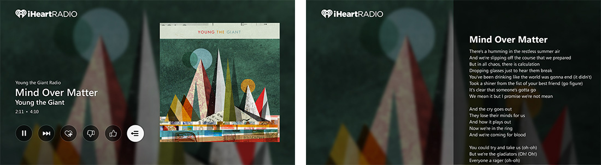
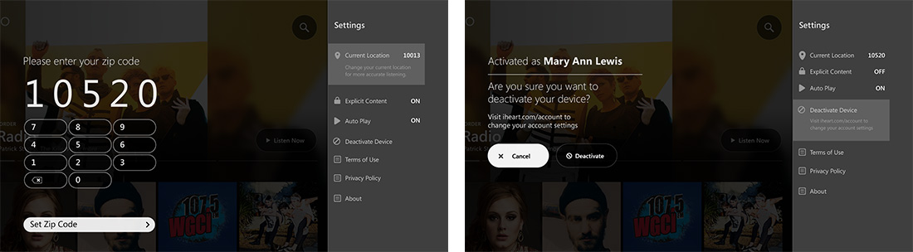
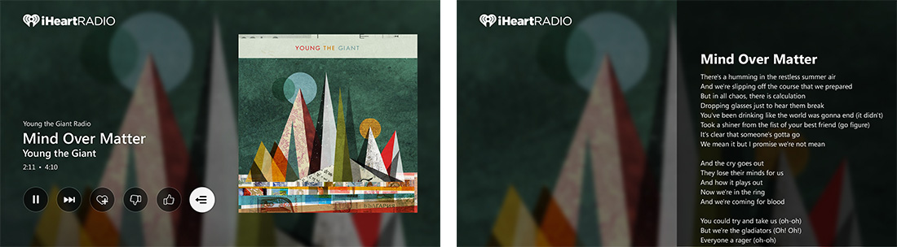
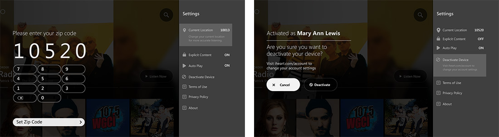

iHeart Radio
Named "the best streaming radio app" (CNET), iHeartRadio is the only music app that features thousands of the country's best live radio stations AND custom stations you control.
The Beginning
iHeartMedia wanted a brand new experience for their Mobile, Tablet and Xbox app of iHeart Radio.

Overview
iHeartRadio is an Internet radio platform owned by iHeartMedia, Inc.[2] Founded in April 2008 as the website iheartmusic.com, as of 2015 iHeartRadio functions both as a music recommender system and as a radio network that aggregates audio content from over 800 local iHeartMedia radio stations across the United States, as well as from hundreds of other stations and from various other media. iHeartRadio is available online, via mobile devices, and on select video-game consoles.
The Problem
The first version of iHeartRadio has proven that the app needs some re-design, starting from the UX point. Based on the HEART framework (number of downloads, happiness, engagement factor, adoption, retention and task success.), data that was collected, showed that the overall app success rate was very low.
Research
When we conducted the user research of an existing product, we learned more about our user characteristics, needs, desires and preferences. We were also able to assess how well are we meeting user needs by ascertaining their perceptions of our current product and determine how usable it is.
We tried to find what are current users pain points, so we could fix them. We also measured the usability goals of tasks, performed by the users. We tested out the first version of the app, asked users to perform different tasks.
The Challenge
As a design challenge, I researched, ideated, created wireframes, prototyped and visually designed the new app. Based on the research we had from the version one, a user research has provided me with better understanding the user's needs and motivations, so that we could develop a product that they truly love.
Wireframes
The point of wireframes is to assign functionality to each screen and show the dependency between the screens.


Visual Design
After a long preparation period, I’ve focused on design. It took about 2 weeks to create all the designs with couple of interactions regarding the UI style. The design represents a well-thought-out UX.
Mobile

Tablet

XBox
 


